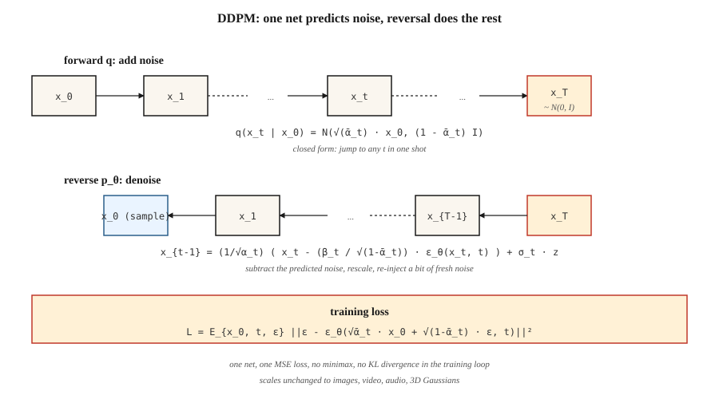

Diffusion Models — DDPM from Scratch
Ho, Jain, Abbeel (2020) gave the field a recipe it could not quit. Destroy the data with noise over a thousand small steps. Train one neural net to predict the noise. Reverse the process at inference. Today every mainstream image, video, 3D, and music model runs on this loop, possibly with flow matching or consistency tricks on top.
- Type
- Build
- Languages
- Python
- Prerequisites
- Phase 3 · 02 (Backprop), Phase 8 · 02 (VAE)
- Time
- ~75 minutes
#The Problem
You want a sampler for p_data(x). GANs play a minimax game that often diverges. VAEs produce blurry samples from a Gaussian decoder. What you really want is a training objective that is (a) a single stable loss (no saddle point, no minimax), (b) a lower bound on log p(x) (so you have likelihoods), and (c) samples that match SOTA quality.
Sohl-Dickstein et al. (2015) had a theoretical answer: define a Markov chain q(x_t | x_{t-1}) that gradually adds Gaussian noise, and train a reverse chain p_θ(x_{t-1} | x_t) to denoise. Ho, Jain, Abbeel (2020) showed the loss could be simplified to one line — predict the noise — and cleaned up the math. In 2020 this was a curiosity. In 2021 it produced state-of-the-art samples. In 2022 it became Stable Diffusion. In 2026 it is the substrate.
#The Concept

Forward process q. Add Gaussian noise in T small steps. The closed form — the reason the math is tractable — is that the cumulative step is also Gaussian:
q(x_t | x_0) = N( sqrt(α̅_t) · x_0, (1 - α̅_t) · I )where α̅_t = ∏_{s=1..t} (1 - β_s) for a schedule of β_t. Pick β_t from 1e-4 to 0.02 linearly over T=1000 steps and x_T is approximately N(0, I).
Reverse process p_θ. Learn a neural net ε_θ(x_t, t) that predicts the noise that was added. Given x_t, denoise by:
x_{t-1} = (1 / sqrt(α_t)) · ( x_t - (β_t / sqrt(1 - α̅_t)) · ε_θ(x_t, t) ) + σ_t · zwhere σ_t is either sqrt(β_t) or a learned variance. The expression is ugly but it is just algebra — solving for x_{t-1} given the posterior q(x_{t-1} | x_t, x_0) and substituting x_0 with its noise-predicted estimate.
Training loss.
L_simple = E_{x_0, t, ε} [ || ε - ε_θ( sqrt(α̅_t) · x_0 + sqrt(1 - α̅_t) · ε, t ) ||² ]Sample x_0 from data, pick a random t, sample ε ~ N(0, I), compute the noisy x_t in one shot via the closed form, and regress on the noise. One loss, no minimax, no KL, no reparameterization tricks.
Sampling. Start x_T ~ N(0, I). Iterate the reverse step from t = T to 1. Done.
#Why it works
Three intuitions:
Denoising is easy; generating is hard. At
t=T, the data is pure noise — the net has to solve a trivial problem. Att=0, the net only has to clean up a few pixels. At intermediatet, the problem is hard but the net has many gradients flowing through the same weights from every noise level.Score matching in disguise. Vincent (2011) proved that predicting the noise is equivalent to estimating
∇_x log q(x_t | x_0), the score. The reverse SDE uses this score to walk up the density gradient — a guided random walk toward high-probability regions.The ELBO reduces to simple MSE. The full variational lower bound has a KL term per timestep. With DDPM's parameterization those KL terms simplify to MSE on noise prediction with specific coefficients; Ho dropped the coefficients (calling it "simple" loss) and quality improved.
#Build It
code/main.py implements a 1-D DDPM. Data is a two-mode mixture. The "net" is a tiny MLP that takes (x_t, t) and outputs predicted noise. Training is the one-line loss. Sampling iterates the reverse chain.
#Step 1: the forward schedule (closed form)
betas = [1e-4 + (0.02 - 1e-4) * t / (T - 1) for t in range(T)]
alphas = [1 - b for b in betas]
alpha_bars = []
cum = 1.0
for a in alphas:
cum *= a
alpha_bars.append(cum)#Step 2: sample x_t in one shot
def forward_sample(x0, t, alpha_bars, rng):
a_bar = alpha_bars[t]
eps = rng.gauss(0, 1)
x_t = math.sqrt(a_bar) * x0 + math.sqrt(1 - a_bar) * eps
return x_t, eps#Step 3: one training step
def train_step(x0, model, alpha_bars, rng):
t = rng.randrange(T)
x_t, eps = forward_sample(x0, t, alpha_bars, rng)
eps_hat = model_forward(model, x_t, t)
loss = (eps - eps_hat) ** 2
return loss, gradient_step(model, ...)#Step 4: reverse sampling
def sample(model, alpha_bars, T, rng):
x = rng.gauss(0, 1)
for t in range(T - 1, -1, -1):
eps_hat = model_forward(model, x, t)
beta_t = 1 - alphas[t]
x = (x - beta_t / math.sqrt(1 - alpha_bars[t]) * eps_hat) / math.sqrt(alphas[t])
if t > 0:
x += math.sqrt(beta_t) * rng.gauss(0, 1)
return xFor a 1-D problem with 40 timesteps and a 24-unit MLP, this learns the two-mode mixture in ~200 epochs.
#Time conditioning
The net needs to know which timestep it is denoising. Two standard options:
- Sinusoidal embedding. Like Transformer positional encoding.
embed(t) = [sin(t/ω_0), cos(t/ω_0), sin(t/ω_1), ...]. Pass through an MLP, broadcast into the net. - Film / group-norm conditioning. Project embedding to per-channel scale/bias (FiLM) at each block.
Our toy code uses sinusoidal → concat. Production U-Nets use FiLM.
#Pitfalls
- Schedule matters a lot. Linear
βis the DDPM default but cosine schedule (Nichol & Dhariwal, 2021) gives better FID for the same compute. Switch schedules if quality plateaus. - Timestep embedding is fragile. Passing raw
tas a float works for toy 1-D but fails for images; always use a proper embedding. - V-prediction vs ε-prediction. For narrow regimes (very small or very large t),
εhas poor signal-to-noise. V-prediction (v = α·ε - σ·x) is more stable; SDXL, SD3, and Flux use it. - Classifier-free guidance. At inference, compute both conditional and unconditional
ε, thenε_cfg = (1 + w) · ε_cond - w · ε_uncondwithw ≈ 3-7. Covered in Lesson 08. - 1000 steps is a lot. Production uses DDIM (20-50 steps), DPM-Solver (10-20 steps), or distillation (1-4 steps). See Lesson 12.
#Use It
| Role | Typical stack in 2026 |
|---|---|
| Image pixel-space diffusion (small, toy) | DDPM + U-Net |
| Image latent diffusion | VAE encoder + U-Net or DiT (Lesson 07) |
| Video latent diffusion | Spatiotemporal DiT (Sora, Veo, WAN) |
| Audio latent diffusion | Encodec + diffusion transformer |
| Science (molecules, proteins, physics) | Equivariant diffusion (EDM, RFdiffusion, AlphaFold3) |
Diffusion is the universal generative backbone. Flow matching (Lesson 13) is the 2024-2026 competitor that usually wins on inference speed for the same quality.
#Ship It
Save outputs/skill-diffusion-trainer.md. Skill takes a dataset + compute budget and outputs: schedule (linear/cosine/sigmoid), prediction target (ε/v/x), number of steps, guidance scale, sampler family, and an eval protocol.
#Exercises
- Easy. Change T from 40 to 10 in
code/main.py. How does sample quality (visual histogram of outputs) degrade? At what T does the two-mode structure collapse? - Medium. Switch from ε-prediction to v-prediction. Re-derive the reverse step. Compare final sample quality.
- Hard. Add classifier-free guidance. Condition on a class label
c ∈ {0, 1}, drop it 10% of the time during training, and at sampling time useε = (1+w)·ε_cond - w·ε_uncond. Measure the conditional-mode-hit rate atw = 0, 1, 3, 7.
#Key Terms
| Term | What people say | What it actually means |
|---|---|---|
| Forward process | "Adding noise" | Fixed Markov chain q(x_t | x_{t-1}) that destroys the data. |
| Reverse process | "Denoising" | Learned chain p_θ(x_{t-1} | x_t) that reconstructs the data. |
| β schedule | "The noise ladder" | Per-step variance; linear, cosine, or sigmoid. |
| α̅ | "Alpha bar" | Cumulative product ∏(1 - β); gives closed-form x_t from x_0. |
| Simple loss | "MSE on noise" | ||ε - ε_θ(x_t, t)||²; all variational derivations collapse to this. |
| ε-prediction | "Predict noise" | Output is the noise added; standard DDPM. |
| V-prediction | "Predict velocity" | Output is α·ε - σ·x; better conditioning across t. |
| DDPM | "The paper" | Ho et al. 2020; linear β, 1000 steps, U-Net. |
| DDIM | "Deterministic sampler" | Non-Markov sampler, 20-50 steps, same training objective. |
| Classifier-free guidance | "CFG" | Mix conditional and unconditional noise predictions to amplify conditioning. |
#Production note: diffusion inference is a step-count problem
The DDPM paper runs T=1000 reverse steps. Nobody ships that in production. Every real inference stack picks one of three strategies — and each maps cleanly to production framing of "where is the latency coming from":
- Faster sampler, same model. DDIM (20-50 steps), DPM-Solver++ (10-20), UniPC (8-16). Drop-in replacement of the reverse loop; the trained
ε_θweights are untouched. Cuts latency 20-50×. - Distillation. Train a student to match the teacher in fewer steps: Progressive Distillation (2 → 1), Consistency Models (arbitrary → 1-4), LCM, SDXL-Turbo, SD3-Turbo. Cuts latency another 5-10×, requires retraining.
- Caching and compilation.
torch.compile(unet, mode="reduce-overhead"), TensorRT-LLM's diffusion backends,xformers/SDPA attention, bf16 weights. Cuts per-step latency ~2×. Stacks with (1) and (2).
For a production diffusion server the budget conversation is the same as production literature describes for LLMs: latency is num_steps × step_cost + VAE_decode, throughput is batch_size × (num_steps × step_cost)^-1. TTFT is small (one step); TPOT-equivalent is the full response time because image generation is "all-at-once" from the user's perspective.
#Further Reading
- Sohl-Dickstein et al. (2015). Deep Unsupervised Learning using Nonequilibrium Thermodynamics — the diffusion paper, ahead of its time.
- Ho, Jain, Abbeel (2020). Denoising Diffusion Probabilistic Models — DDPM.
- Song, Meng, Ermon (2021). Denoising Diffusion Implicit Models — DDIM, fewer steps.
- Nichol & Dhariwal (2021). Improved DDPM — cosine schedule, learned variance.
- Dhariwal & Nichol (2021). Diffusion Models Beat GANs on Image Synthesis — classifier guidance.
- Ho & Salimans (2022). Classifier-Free Diffusion Guidance — CFG.
- Karras et al. (2022). Elucidating the Design Space of Diffusion-Based Generative Models (EDM) — unified notation, cleanest recipe.
Nice. That's 7 minutes of Generative AI behind you.
Continue to Latent Diffusion & Stable Diffusion →